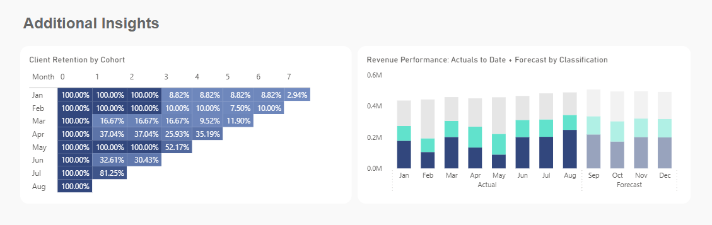

This executive dashboard consolidates core business KPIs, revenue and client performance metrics, and statistically validated forecasts. Forecasts leverage walk-forward validation and KPI-based accuracy measures, providing actionable insights into future revenue trajectories and target achievement.

Provide executives with a single interface to monitor key performance indicators, assess revenue and client trends, and support data-driven decisions across business areas, including revenue, client growth, retention, and platform performance.
Power BI for interactive visualisation; BigQuery for data warehousing; CRM, ERP, DSP platforms, and internal databases for data sourcing; SQL for data transformation; ARIMA+ forecasting models for predictive analysis.
CEO, Executive Directors, Finance, Marketing, and Sales leadership. The dashboard delivers high-level KPIs for strategic oversight and detailed insights for operational and commercial decision-making.
The dashboard consolidates core business KPIs, revenue performance, client analytics, and statistically validated forecasts within a single executive interface. Interactive KPI cards and trend visuals provide a real-time view of revenue, client growth, retention, and platform performance.
Users can drill down by client classification (New, Returning, Existing) to evaluate acquisition effectiveness, retention patterns, and churn risk. Integrated predictive forecasting, powered by ARIMA+ models with walk-forward validation and KPI-based accuracy monitoring, provides forward-looking visibility into revenue trajectories and target attainment.
A dedicated Service-Level Performance table highlights Revenue Share, Year-over-Year Growth Contribution, and Gross Profit, enabling executives to quickly identify top-performing services and assess their impact on overall growth and profitability.

Note: All metrics presented are based on professional experience and have been anonymised, aggregated, or proportionally adjusted to ensure compliance with confidentiality and data protection standards.

Interactive dashboard visualising key sales KPIs, trends, and insights to support strategic decision-making.
MySQL • Zoho • Power BI

A Python application that classifies clients using large-scale data and custom business logic.
85% faster client data processing

Finance dashboard visualising key KPIs, profitability trends, and cost insights to drive decision-making.
QlikSense • Excel • PowerBI